Kostičková hra pro Android s vlastním enginem v C++ a OpenGL ES 3. Čtyři dimenze, stovky bloků, módy, multiplayer přes Wi-Fi i bez internetu, a teď i Starý svět z prvních verzí 0.1–0.3.
Všechny novinky aktualizace Concrete & Old World, natočené přímo ve hře.
Verze 1.8.0 spojuje atmosféru úplně prvních verzí s novým stavěním, barvami a rozšířenou Karmínovou prázdnotou.
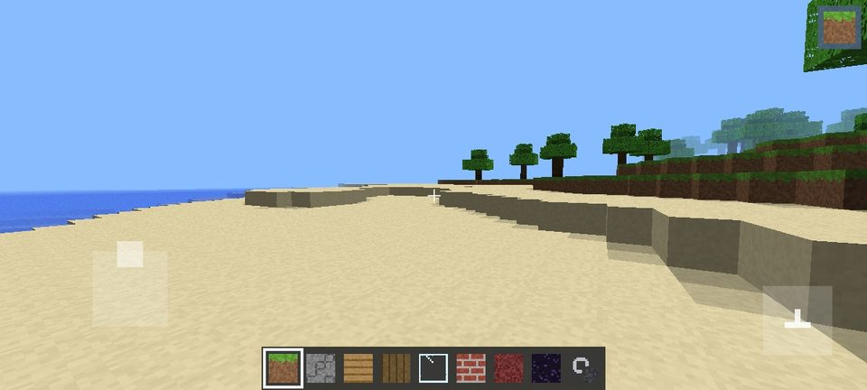
Původní terén, textury, mlha, plovoucí joystick, 9 pevných bloků a staré menu. Portál vede do starého Netheru, „Vypnout server“ tě vrátí do aktuální verze.
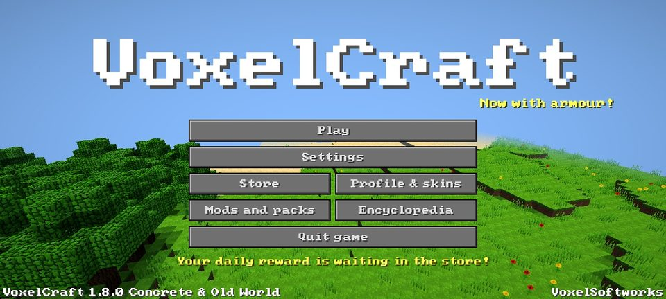
Zapni ho v Módech a balíčcích a celé menu, tlačítka, sloty i HUD dostanou šedý vzhled verze 0.3.
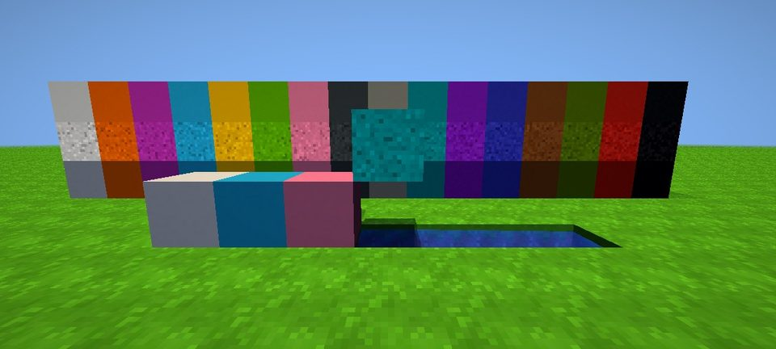
Betonový prášek padá jako písek a ve vodě nebo v dešti ztvrdne. K tomu 16 barviv, barevná vlna a koberce.
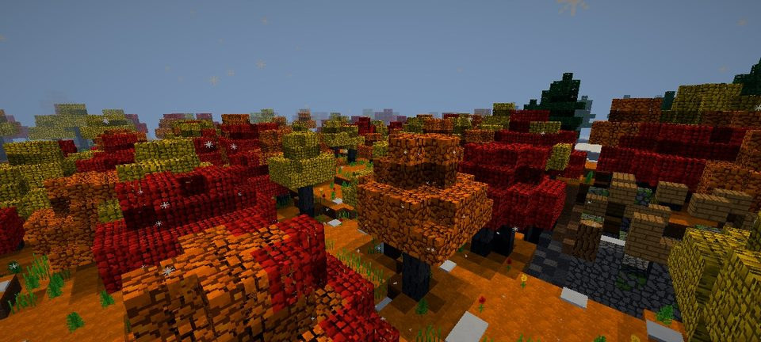
Šedé dřevo, červené, oranžové a žluté listí, oranžová tráva a většinou sníh. Ukrývá tábory se zásobami.
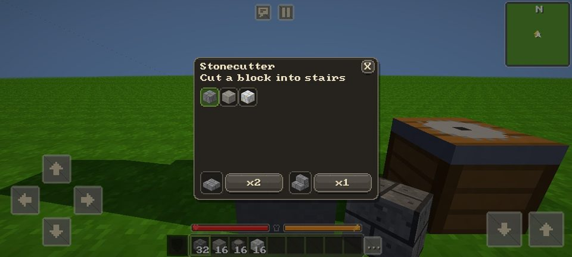
Schody a desky bez ztrát, 6 prken z jednoho kmene a ploty. Schody a desky má teď skoro každý blok.
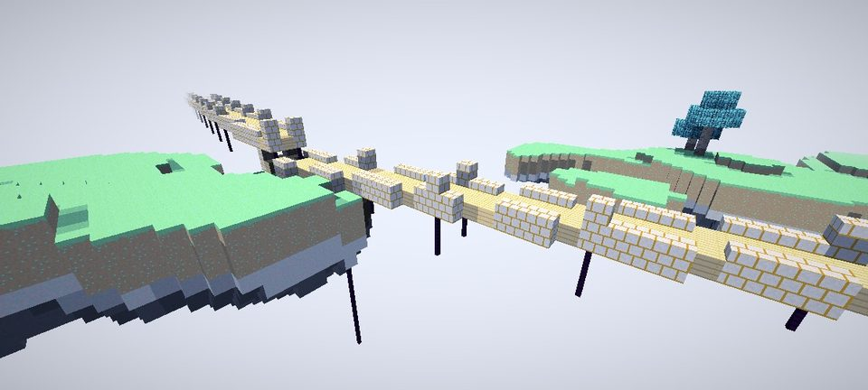
První stavby Nebeské říše: rovné mosty se zábradlím, sloupky a řetězy nad bílou propastí.
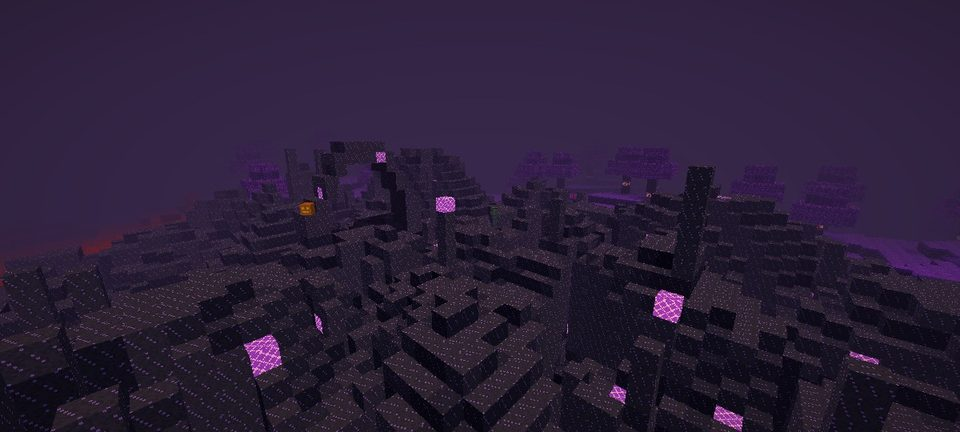
Crimsoniový les se svatyněmi, Roztříštěná prázdnota s oblouky a věžemi a Poušť prázdnotných střepů se skrytými komorami.
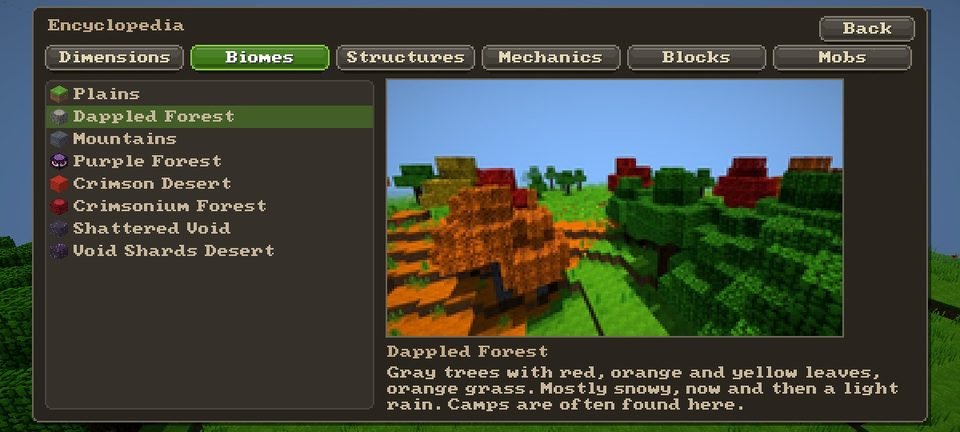
Dimenze, biomy, stavby, mechaniky, všechny bloky, předměty i moby na jednom místě, se snímky ze hry.
Každá dimenze má vlastní bloky, stavby, moby a hudbu.
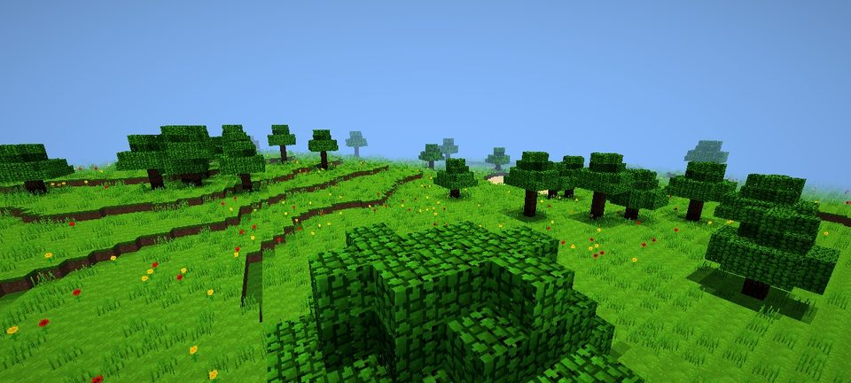
Pláně, lesy, hory, pouště, jeskyně, vesnice, doly a tábory.
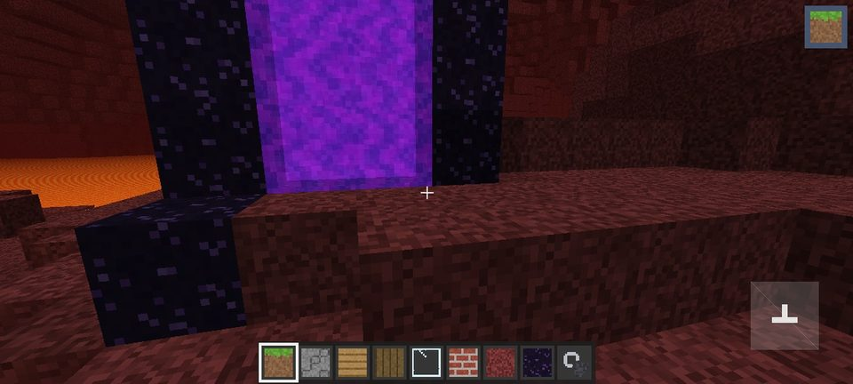
Lávová moře, powerstonová pustina a velká pevnost.
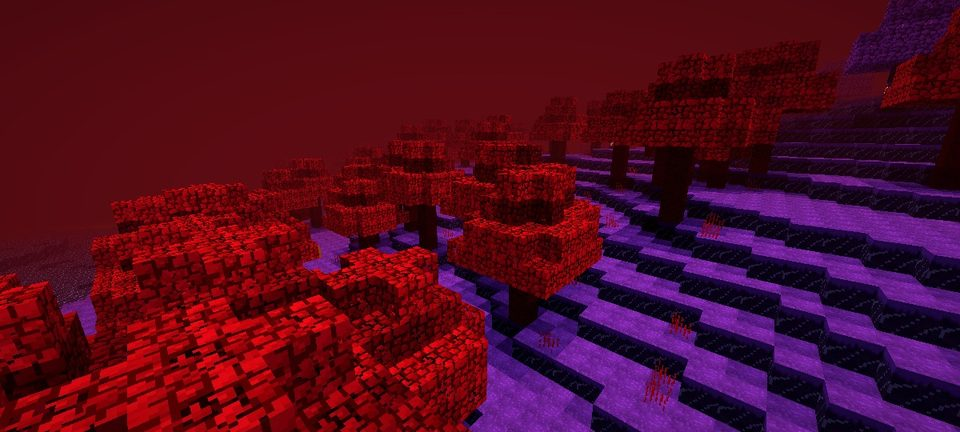
Oční stromy, karmínová poušť, aréna bosse a tři nové biomy.
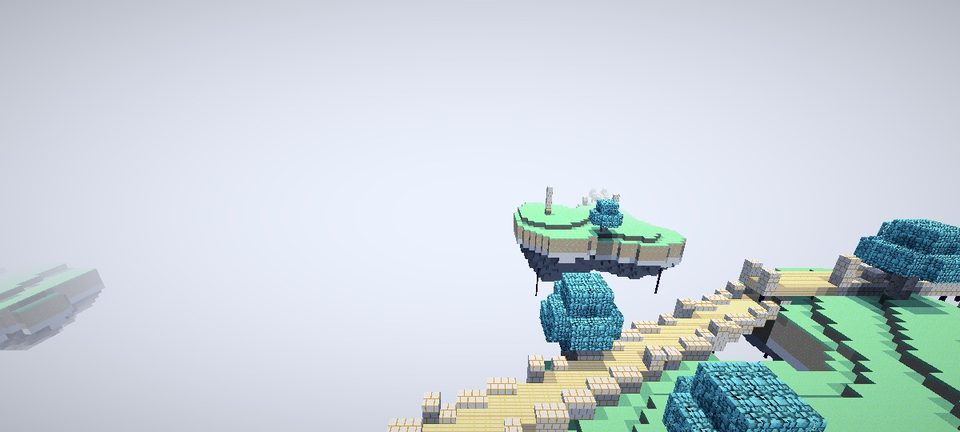
Plovoucí ostrovy nad bílou oblohou. Otevře ji 12 hlav Karmínového muže.
Celestial Reach Update: Nebeská říše dostane vlastní terén, fyziku a obyvatele.
Asi 45 % běžné gravitace: vyšší skoky, delší pády a ovládání ve vzduchu.
Ostrovy z bílého kamene a modrých hornin, krystalové žíly a zbytky mostů.
Nová ruda, čtyři nástroje a jediný nový kus brnění: nebeský hrudní plát.
Celestling, Reach Stalker a Sky Drifter.
Od prvního enginu po čtyři dimenze.